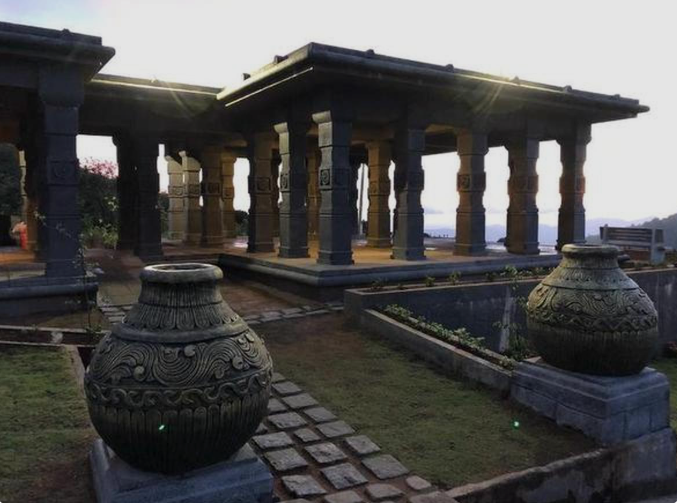
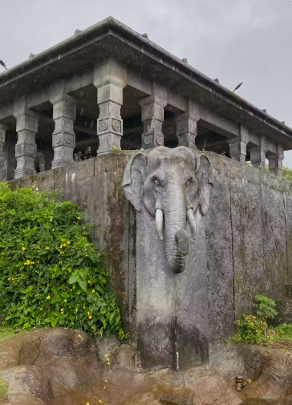
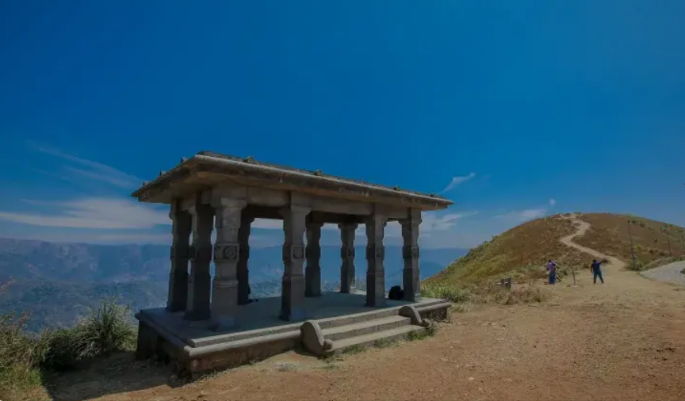
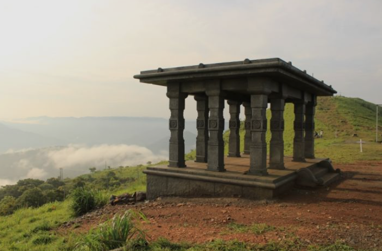

Panchalimedu is a beautiful hill station located in the Idukki district of Kerala. According to local legend, the place is associated with Panchali (Draupadi), the queen of the Pandavas from the Mahabharata, who is believed to have stayed here during their exile. The hilltop is surrounded by lush green meadows, mist-covered mountains, and dense forests, making it a popular destination for tourists and pilgrims.
Visitors can enjoy breathtaking panoramic views of the Western Ghats, especially during sunrise and sunset. The peaceful atmosphere, cool climate, and scenic beauty make Panchalimedu an ideal place for trekking, photography, and relaxation. It is a perfect destination for nature lovers, history enthusiasts, and anyone seeking a calm and refreshing experience in Idukki.




Panchalimedu is a beautiful hill station and eco-tourism destination in Idukki District, Kerala. Located near Kuttikkanam, it is famous for its rolling hills, cool climate, panoramic viewpoints, trekking trails and mythological importance. The place offers breathtaking views of valleys, forests and grasslands, making it a favourite destination for nature lovers and photographers.
According to the Mahabharata, the Pandavas and their wife Panchali (Draupadi) stayed here during their exile. The name "Panchalimedu" means "Hill of Panchali." The site has become an important tourist and pilgrimage destination because of its natural beauty and legendary connection. 0
Panchalimedu is known for its scenic viewpoints, gentle trekking trails, mist-covered hills, sunrise and sunset views. Visitors can also see Panchalikulam, Bhima's Footprint, Bhuvaneswari Temple and enjoy the peaceful natural surroundings. 1
The hills are covered with grasslands, evergreen forests, medicinal plants and flowering shrubs. Visitors may also spot colourful birds, butterflies and other wildlife found in the Western Ghats.
Today, Panchalimedu is one of the most popular hill stations in Idukki. It attracts thousands of tourists every year with its panoramic views, mythological significance, trekking opportunities and peaceful atmosphere. 2